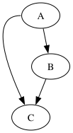
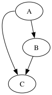
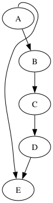
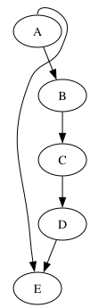

FIXED 2026-06-16 (refined-curve bb growth). The left bulge was never clamped in the routing — the loop swings left of the origin exactly as dot does. The old control-hull bb shifted the whole drawing right; the faithful refined-curve updateBbBz reserves the true left extent, so the loop now reaches x≈-21 (and x≈-11 for the 4-rank case) matching dot within 0.15pt.
The drawings below are the actual rendered SVGs — the visual match is the test. Backgrounds are a checker pattern so white fills show.




A:w->C — loop bulges left of x=0; now matches dot.
| pt | dot 15.0.0 | graphviz-ts | Δ |
|---|---|---|---|
| 0 | 25.30,-162.00 | 25.35,-162.00 | 0.05 |
| 1 | -20.97,-162.00 | -20.91,-162.00 | 0.06 |
| 2 | 7.27,-86.97 | 7.19,-86.97 | 0.08 |
| 3 | 26.35,-45.61 | 26.20,-45.61 | 0.15 |
| viewBox | 103 x 188 | 102 x 188 | 1 |
dot’s loop swings to x≈-21 (left of the origin); the routing always did the same. The divergence was the drawing bbox: the old control-hull updateBbBz under-reserved on the left (the bulge’s leftmost point is the actual curve, not a control point), so the graph transform shifted the loop right and it looked clamped at x=0.
The faithful refined-curve bb (emit.c:746 adaptive refinement) reaches the true left extent, so the loop now renders at dot’s negative x. The deep 4-rank case matches the same way (x≈-11). viewBox 102x188 vs dot 103x188 (off-by-one rounding).
No corridor-assembly change was needed — the routing was faithful all along; only the bb growth was approximate. Pinned as dot-oracles in steering-port-regression.test.ts.